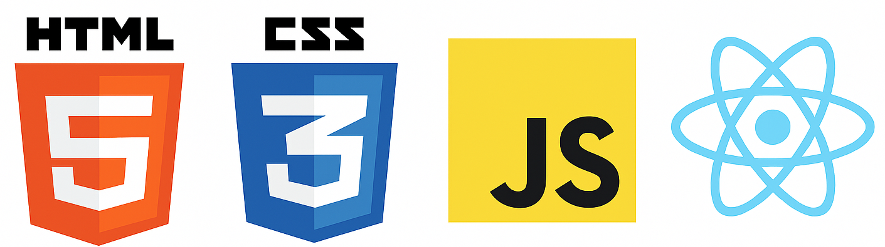
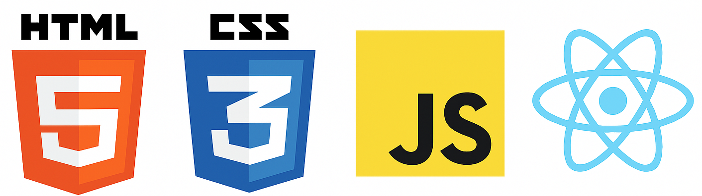

Marco Crescentino
Competenze:
hard skill: html, css,javascript, react, excel, web hosting, responsive design, CMS WordPress, SEO/Google analytics, marketing, project management, copywriting, finanza personale, matematica,contabilità base, data entry, macroeconomia e microeconomia, collaborazione con strumenti di intelligenza artificiale per svilluppo e ottimizzazione.
soft skill; problem solving, team work, curiosità, creatività, autonomia nell'apprendimento e nel lavoro, capacita di ragionamento logico, disciplina, determinazione, organizzazione, comunicazione rispettosa, adattabilità, gestione del tempo, capacita di lavorare con strumenti digitali, flessibilità.
Chi sono:
Sono uno studente di Economia all’Università di Ferrara con una grande passione per il mondo digitale e lo sviluppo web. Nel tempo libero mi dedico a progetti in HTML, CSS e JavaScript: trasformo le idee in pagine web funzionali e curate, con nuove tecniche ogni giorno, considerando i bug un’occasione per imparare. Sto costruendo il mio percorso come junior developer, con l’obiettivo di crescere sia sul lato tecnico (front-end, responsive design, JavaScript moderno) sia su quello analitico, collegando lo sviluppo software con le competenze che sto maturando in ambito economico.
Progetti: